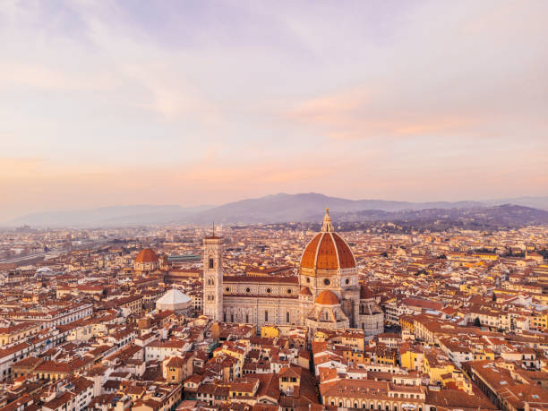
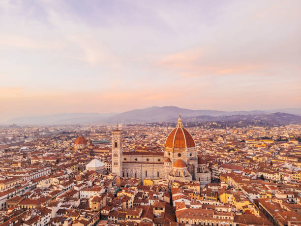

I would visit Florence, Venice, Milan, Naples. The most fun part of travelling is exploring cities by foot and then remembering the layout of everything you've visited and over time, everything becomes familiar as if you know the place. I also would like to be there and live like a normal citizen and not necessarily a trip where you visit everything with the pressure of having to follow a schedule. I think it's much more relaxing to take things easy and enjoy the different sceneries.
 
